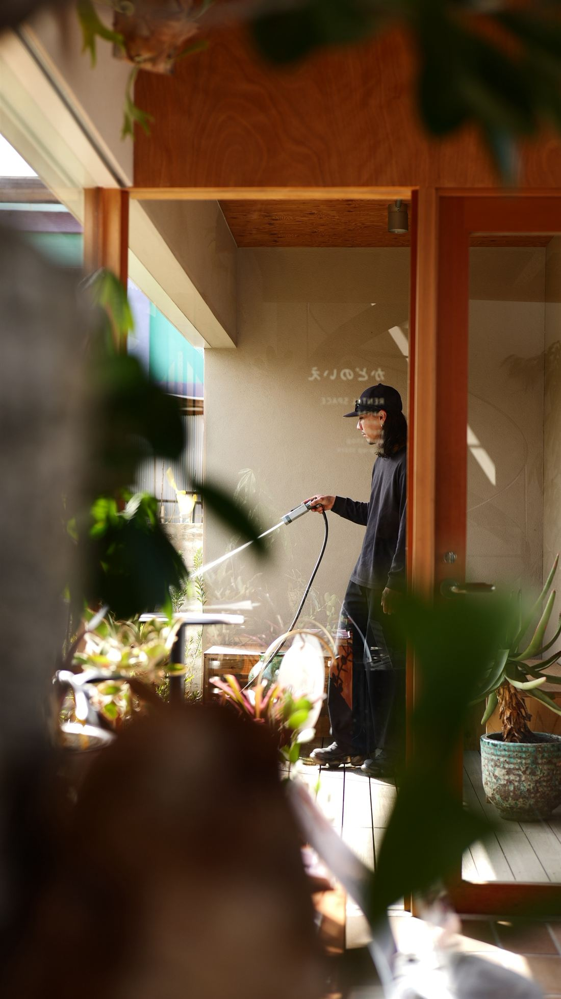
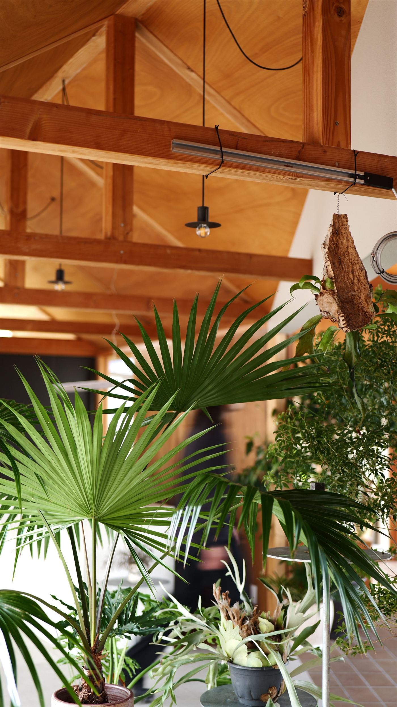
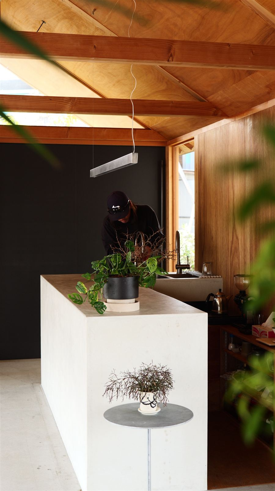

Shadow影
壁に落ちる枝の影や、足元の木漏れ日。影の出方は、木を植える位置で決まります。
Mission
その場所にしかない景色をつくる
Purpose
SOIL+は、植物だけで庭を考えません。
土と植物に、石や鉄、建物、光と影、
そしてそこで暮らす人を掛け合わせ、
その場所でしか見られない景色をつくります。
「SOIL」＝土。
植物を育み、景色を支える「土」と向き合う大切さ。
「＋」＝人の手。
考え、手を動かし、それぞれの仕事を新しい視線で見つめること。
庭や空間づくり、ものづくり、音楽や映像。
人の手が関わる、ジャンルの異なるプロジェクトを表すしるし。
そこにある魅力や可能性を見つけ、
ジャンルが違えど一つひとつの仕事に向き合う姿勢は変わらない。
それがSOIL+。
職人として働きはじめたころ、
木を一本植えるだけで景色も空気も変わることに驚きました。
続けるうちに、植物には依頼してくださった方の想いを込められることを知りました。
植えた木は、その家の思い出とともに育っていきます。
向き合うのは、物ではなく生き物です。
だから、植える前に土の状態と暮らし方を見ます。
家を空けることが多い方には、
手をかけすぎなくても元気に育つ土と植物を選びます。
完成した日の姿だけでなく、
数年先、その先の姿まで考えて植えます。
うれしいのは、しばらく経ってから
「育てやすい」「大きくなったね」と言っていただけるとき。
庭の変化に気づいてもらえることが、
いちばんの評価だと思っています。

Method
庭を考えるとき、いつも立ち返る七つの言葉です。
壁に落ちる枝の影や、足元の木漏れ日。影の出方は、木を植える位置で決まります。
風にそよぐ枝や草を、動かない石や鉄のそばに添えます。
古いものと新しいもの、重いものと軽いもの。並べることで、互いの良さが引き立ちます。
鉄、石、コンクリート、木。植物と同じくらい時間をかけて選びます。
木は毎年すこしずつ形を変えます。その変化を前提に、植える間隔と位置を決めます。
錆びていく鉄、苔むす石。年月を重ねるほど味わいを増す素材を選びます。
古くから日本の庭にある植物を、
今の建物や暮らしに合わせて取り入れます。

Profile
平 佑介Yusuke Taira
現在は和歌山市を拠点にガーデンデザインを主軸とした庭と建物を繋ぐ外構工事を手がける。

Contact
Instagram の DM からも
お問い合わせいただけます。